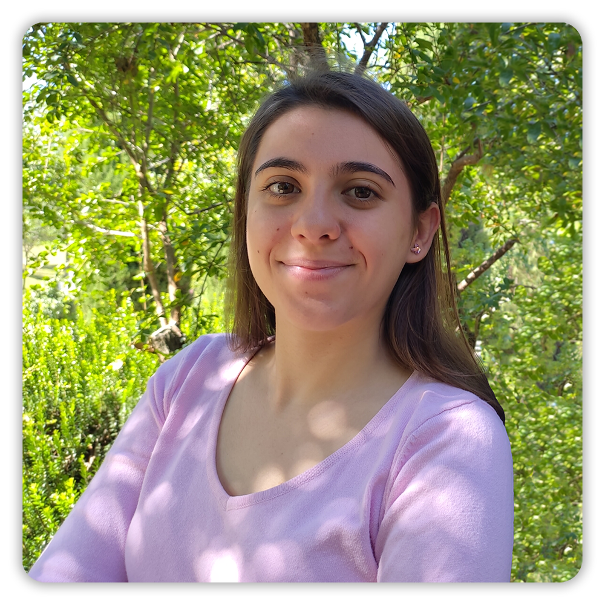
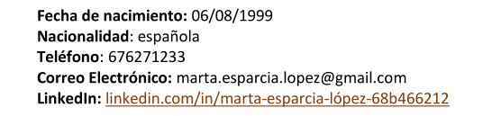

I'm years old, I am an Industrial Engineer specialized in Chemistry and Renewable Energies by the Polytechnic University of Madrid
I have a great capacity for work and motivation, I am interested especially in renewable energies and the transformation of the energetic future.


Education at the Escuela Técnica Superior de Ingenieros Industriales (School of Industrial Engineering).
Internship at Polytechnic University of Madrid (UPM) in collaboration with the European Engineering Learning Innovation and Science Alliance (EELISA) from September 2023 to February 2024.
Education completed at the Escuela Técnica Superior de Ingeniería y Diseño Industrial from September 2017 to July 2022.
Curricular internship at the Consejo Superior de Investigaciones Científicas (CSIC) between February and May 2022.
In November 2021 I was a teacher in the course on Arduino and chemical sensors organized by the student section ISA ETSIDI and the student association CREA ETSIDI.
Participant as mentored from April to November 2021. Taught by Manuel Zafra Palacios and organized by the student section of the International Society of Automation (ISA) of ETSIDI.
I completed this course in its entirety (50 hours) in September 2021, taught by Prof. Dr. Axel Blokesch, University of Applied Sciencies (Frankfurt).
From March to May 2021 I took this course (3 hours per week) given by Emerson and organized by the ISA Student Section of ETSIDI.
I completed my high school studies from 2015 to 2017 at Colegio Claret in Madrid.
• MS Office (Very high level)
• OriginLab
• C++
• AutoCAD
• MatLab
• EcosimPro
• Step 7
• ProMax
• Aspen Plus, Aspen Hysys
• Thermoflow
• LIDER-CALENDER (HULC)
• Spanish (Native)
• English (C1)
• French (B1-B2)
On several occasions I have had experiences abroad. In 2015 I did an exchange in Paris in order to improve my level of French. In addition, in 2015 and 2016 I did a linguistic immersion in English, in Ireland and in England.
• Active member of the ISA student section of ETSIDI.
• Active member of the Robotics, Electronics and Automation Club of ETSIDI, UPM.
• Driving license type B
• Aquatic lifeguard at national level. Real Federación Española de Salvamento y Socorrismo. Since 2016
• Flute studies (2nd professional studies). Professional Conservatory of Music Amaniel (2015-2018)
• Teamwork
• Communication
• Generosity and tolerance
• Adaptation to the environment
• Organization
• Ability to learn and work
• Initiative